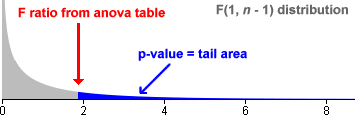

Test statistic
The test for the hypotheses

can be based on the F ratio

P-value
The p-value is the probability of such an 'extreme' value of the test statistic when H0 is true. This is the upper tail area of the F distribution,

This p-value is interpreted in exactly the same way as other p-values:
Simulation
In the diagram below, samples are initially selected from a normal population with mean µ = 0.
Click Take sample a few times and observe how the p-value is obtained from the upper tail area of the F distribution.
Use the slider to increase the population mean to 3.0 and click Take Sample a few more times.
Low p-values therefore provide evidence that the population mean is not zero.